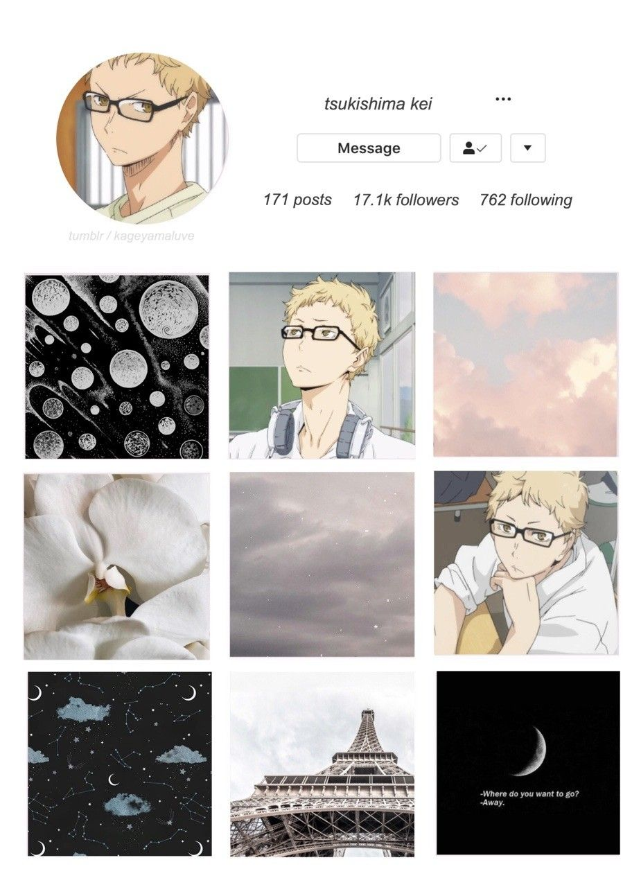
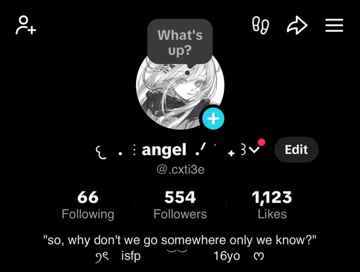
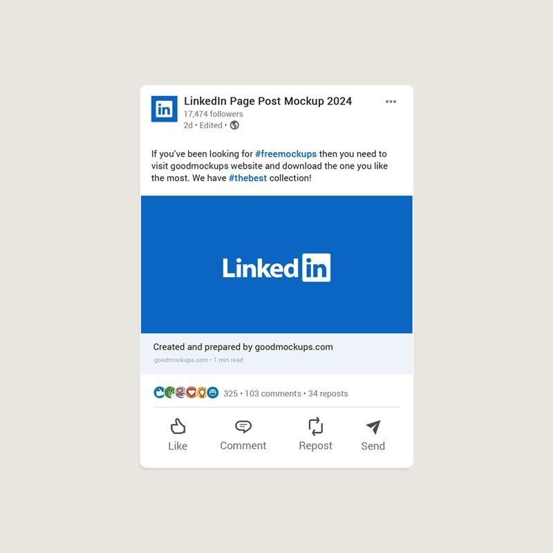
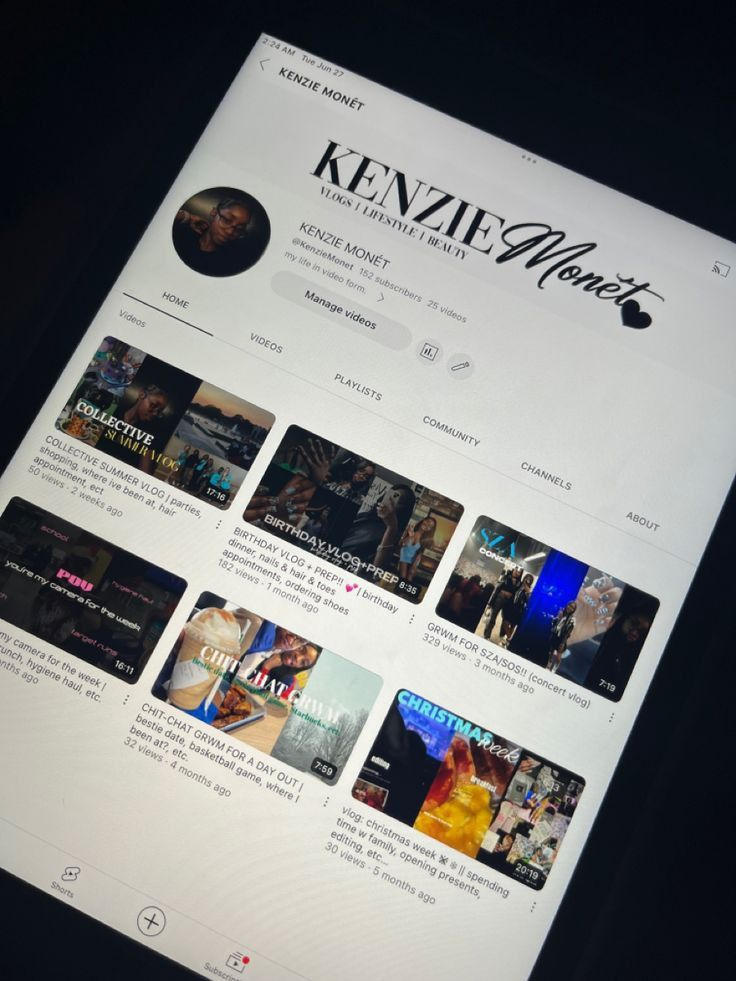
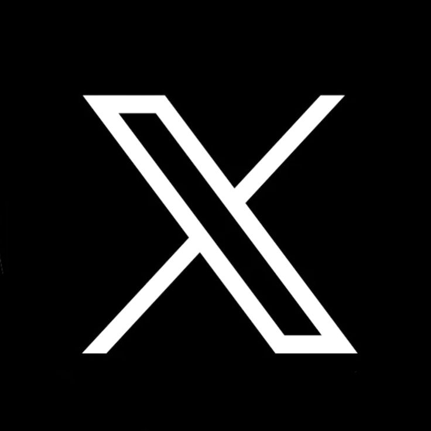
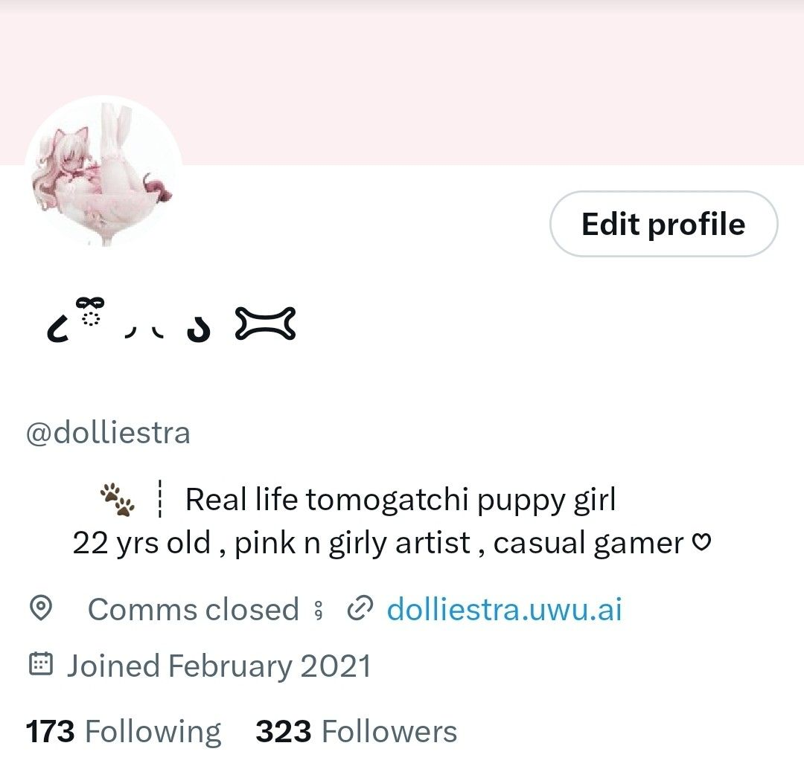
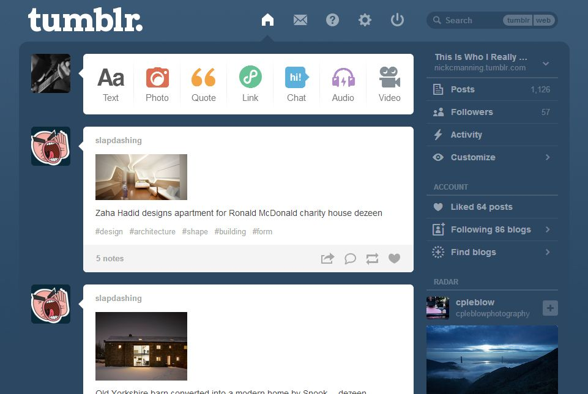
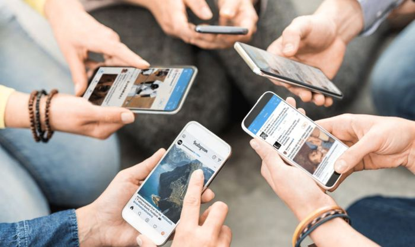
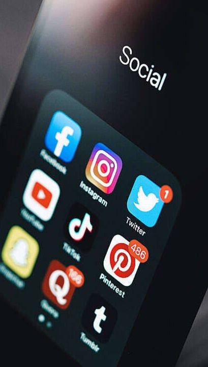

Bingung!! Bagaimana aku menggunakan media sosial dengan benar?..( ˶óᯅò) !!
Bingung!! Bagaimana aku menggunakan media sosial dengan benar?..( ˶óᯅò) !!
Apa itu media sosial? Media sosial adalah platform berbasis teknologi digital yang memfasilitasi penggunanya untuk saling berinteraksi, membuat serta membagikan konten berupa tulisan, foto dan video secara daring.
Media sosial memungkinkan komunikasi dua arah atau banyak arah tanpa dibatasi oleh ruang dan waktu. Fungsi utama media sosial adalah untuk komunikasi, berbagi informasi, bisnis, pemasaran, dan hiburan. Media sosial menghubungkan individu, mempercepat penyebaran berita, membantu promosi produk dan menyediakan konten menarik.
Contoh media sosial yang ada adalah:









Kenapa kita harus menggunakan media sosial dengan benar dan bijak? Kita harus menggunakan media sosial dengan benar untuk melindungi diri dari masalah hukum, menjaga kesehatan mental serta menciptakan lingkungan digital yang aman bagi semua orang. Kita harus belajar untuk menggunakannya dengan bijak untuk menghindari kejahatan siber, dan melindungi nama baik. Jejak digital yang ditinggalkan di internet bersifat permanen, maka kita harus berhati-hati. Dengan menggunakan media sosial dengan bijak, kita dapat menghindari penyebaran hoaks yang dapat memicu kepanikan, dan mencegah cyberbullying yang dapat melukai mental orang lain.


Cara menggunakan medsos dengan benar dan bijak:
Menjaga etika dan perilaku
Di dunia media sosial, kita harus menggunakan bahasa yang sopan seperti menghindari kata kasar, menghina atau merendahkan orang lain. Kita harus sadar untuk tidak menyebarkan konten yang mengandung unsur SARA atau pembulian.
Menyaring dan menyebarkan informasi
Sebelum kita menyebarkan informasi kepada orang lain, kita harus mengecek kebenaran berita tersebut agar kita tidak membuat konflik. Jika kita tahu bahwa berita tersebut hoaks, kita tidak boleh menyebarkannya.
Menjaga privasi dan keamanan
Kita harus berhati-hati ketika bermain media sosial. Kita tidak boleh memberikan informasi terlalu detail seperti alamat rumah atau nomor rekening. Kita harus lebih mengamankan diri dan sadar akan bahayanya berinteraksi secara daring.
Berpikir sebelum memposting
Kita harus sadar bahwa jejak digital kami nanti akan menjadi permanen, maka kita harus berhati-hati ketika menyebarkan foto atau video di akun media sosial kita. Kita harus berpikir, apakah konten ini edukatif, atau mungkin dapat menyebabkan konflik?
Apa yang dapat membantu saya menggunakan media sosial dengan benar dan bijak? :
Literasi digital adalah kemampuan untuk mengakses, memahami, mengelola dan memanfaatkan teknologi serta informasi digital secara bijak, kritis dan eits. Tidak hanya bisa memakai perangkat, literasi digital berarti bahwa kita memahami etika, keamanan data dan dapat berpikir kritis terhadap konten.

Kita dapat menerapkan dan melatih literasi digital dengan berpikir kritis, menerapkan etika, dan memanfaatkan teknologi dengan benar. Kita dapat melatih literasi digital dengan berpikir kritis seperti mengecek sumber, memverifikasi data, dan sadar akan hal yang kita baca dan unggah. Dengan literasi digital, kita juga lebih menerapkan etika seperti bersikap sopan, menghindari emosi sesaat dan menghargai hak cipta. Dengan literasi digital, kita juga lebih sadar untuk memanfaatkan teknologi secara produktif seperti menggunakannya sebagai platform edukatif, mempelajari teknologi dan meningkatkan keterampilan, serta membuat teknologi sebagai alat bantu untuk mencari pekerjaan, atau mengerjakan tugas.
Dengan menggunakan media sosial yang benar, kita dapat menciptakan ruang digital yang aman, menghindari masalah dan menjaga kesehatan mental. Kita tidak akan melanggar sanksi hukun, terhindar dari rasa cemas, stres atau FOMO, membangun regulasi emosi yang positif, menciptakan hubungan yang sehat serta menjaga keamanan privasi.